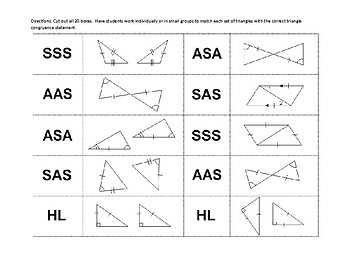

The story of triangle congruence is a testament to our journey to learn about shapes and space. Humans of ancient times, like the Egyptians and Babylonians, first developed these ideas, similarly to the Pythagorean Theorem. But it was the Greek Polymath Euclid that formalized these ideas. Euclid's work set the rules for congruency in triangles. Some theorems include: Side-Angle-Side (SAS), Angle-Side-Angle (ASA), Side-Side-Side (SSS), and any time and 2 corresponding angles and any corresponding side is congruent (AAS) or (ASA).
Triangle congruence is cool and all, but I know what you are thinking: Why do we study this meaningless subject? How is knowing that two triangles are the same gonna help me pay my taxes or finance a house? Although it may seem meaningless, finding congruent triangles has its purpose. Probably the most obvious is problem solving and logical thinking. You need to learn how to make connections and use former knowledge in order to put together a proof which can support your claim. Similarly to the Pythagorean theorem, congruent triangles can be used to help in construction. Making sure that angles on bridges are congruent on both sides is necessary to ensure the stability of that bridge. In computer graphics and design, congruent triangles can be used to maintain proportions so things don’t look wacky. Triangle congruence transcends its geometric origins and becomes a tool used by many in their day to day lives.